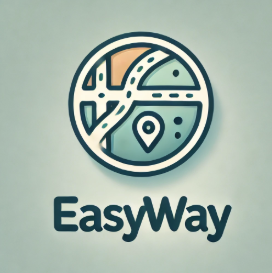
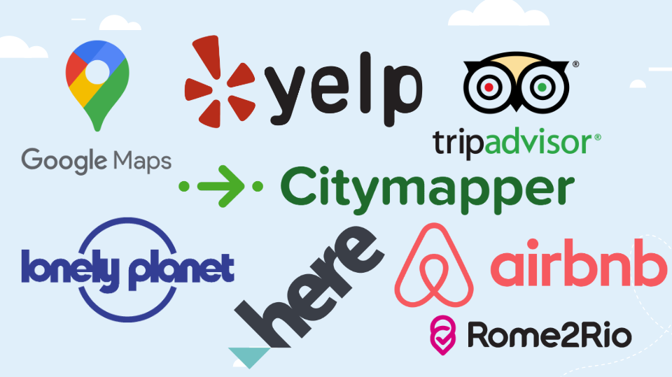
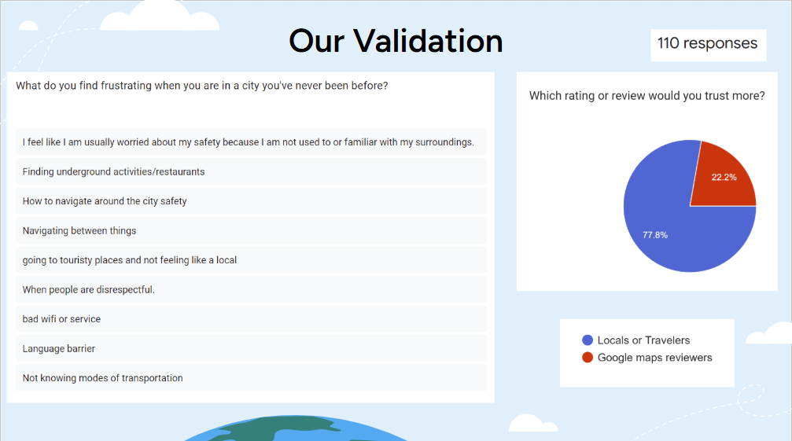
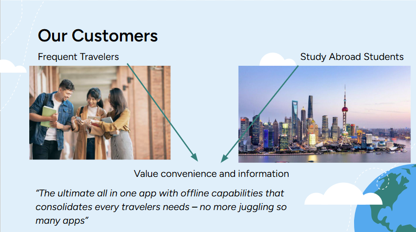
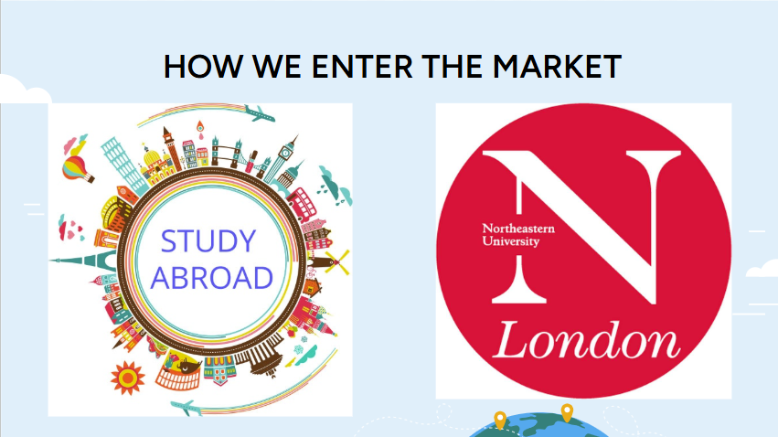
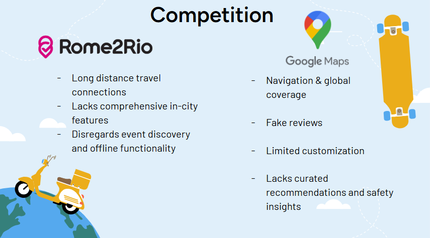
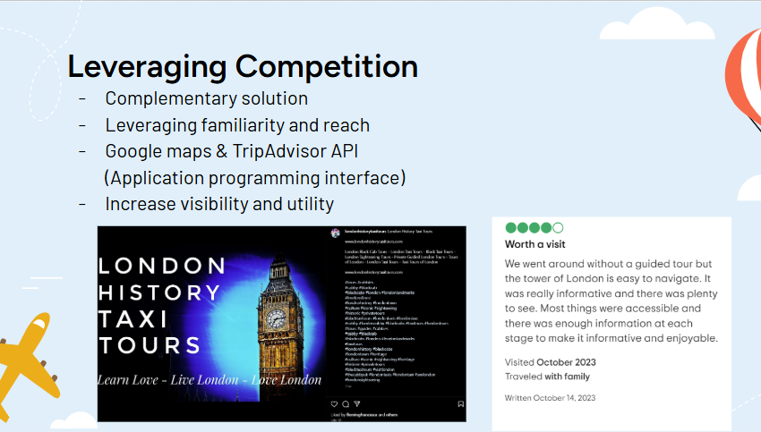

EasyWay Innovation // December 11th, 2024
"Travelers today face a cluttered app environment, with each app focusing on a different problem. One for directions, one for food, and another for events, etc. Google maps, while helpful, is not built with traveler specific needs in mind. Our solution is a single, comprehensive app tailored for travelers. This app consolidates all the essential information, from navigation and food spots, to events and safety ratings. Users can also download this information in advance allowing them to explore without constant internet connection.
Instead of juggling multiple apps and paying premiums for individual services, users can access everything they need in one simple, cost effective platform. This app is designed to simplify the traveling experience, making it stress free for travelers."
Innovation! 2301 at Northeastern Univeristy Oakland required groups of 4-5 students to come together and create a hypothetical start-up. The groups were randomly selected by our professor so we were all with unfamiliar faces. By the second week my group had been decided and we brainstormed on ideas we could commit to for our start-up project. Our earliest ideas were all travel related, starting off with a bathroom finder app for any city in the world. We quickly found that we would not be able to get that done within the semester (and that they already existed). Pivoting between ideas we decided on EasyWay; this was our combination of a multitude of the existing travel apps best features. Inspiration came from TripAdvisor, Citymapper, and Yelp. Since all the members in our group traveled relatively frequently we were all familar with these sites and their flaws.

Each week throughout the semester we learned about a new topic important to start-ups development. One week it was research, another was accounting. Although we weren't experts at these new topics right away it was just enough for what we needed to understand the scope of our own project. We were expected to present our project so far for the Midterm Exam, and a completed version with implemented feedback at the end of the semester. For the rest of this write up I will go over each slide for our final presentation, explaining our actual project, what we learned, and how it can be used for future endeavors. This will include all the research and calculations we did for every section as well as our script on presentation day.
"Before we begin, everyone please raise your hand if you're a global scholar. Now, keep your hand up if you have ever lived in London for at least a month. Imagine when you're in London next semester. You want to know the best places to eat, stay safe, and find events; all while navigating an unfamiliar city. But instead, you find yourself switching between five different apps just to plan your day. Good news for you, we present EasyWay."
Since we were all apart of the Global Scholars program, our second semester that year would be in London instead of Oakland. By using this fact, before our elevator pitch we gave a small introduction that was targeted to the students in the room while we presented (given in the quote above). This gave more life to the demonstration and definetly caught the attention of people dozing off. Up next were our introductions and roles for the project. For the privacy of my groupmates I will remove their names and images from the files attached at the end of this write up.

Our elevator pitch consisted of reaching to our audiences pathos and relying on the fact that they had required travel for the following semester. We highlighted individual apps and sites that the audience already knows. Then we reveal that those services are all committed to other purposes and there exists a gap of what traveling students really need. In that place is EasyWay, our startup for this innovation course.
The quote at the beginning of this page is the first half of the pitch we used on presentation day. We end our introduction by showing the class what EasyWay actually does in comparison to the previously mentioned apps. We went on the idea that our service would combine the information of others like Google maps, Tripadvisor, etc. and put it into one application.
Additionally you would be able to download all this information so there is no need for an internet connection to access it. A Safety Score and Cultural Information was added to locations as well. Clearly our application was not just a copy of others and would be worth a premium instead of having to switch around all the other services you would need. Following our description of EasyWay came a little demo of our services made by using the site Glide for a no code application. Showing a pre-recorded video of one of our project members going through each of our services, unfortunately we no longer have the video and it cannot be accessed through the slides. Another unfortunate event is that Glide has since been updated by the time of writing this paper and we cannot access our minimum viable product. Our data is still there however what we show was supposed to be what EasyWay looked like for the user and the layout of our information.
To ensure we truly understand traveler needs, we conducted a survey with over 100 participants, including students and frequent travelers. Three core pain points emerged when traveling to a new city: first, concerns about safety in unfamiliar areas; second, frustration with unreliable travel information; and third, the challenge of accessing information offline. These insights helped shape EasyWay’s design. We are making sure that we solve the real problems travelers face, not just what we think.
In the same survey we asked what else people were looking for, to make sure we meet the needs of travelers. The most apparent desire was offline functionality and locally curated content. Based on this we will make sure that our data is easy to download. We also decided on an event listing section where local gatherings are recorded.



Our customers fall into two primary categories. We have study abroad students looking for safe and easy to use tools to navigate their new home. We also have frequent travelers who value local trustworthy recommendations and offline functionality. Across both of these groups, safety, convenience, and reliable, location specific information are top priorities. By understanding who we are selling to we can access the market.
Easyway's market entry strategy focuses on building a strong foundation with study abroad programs. First, we’ll launch in a single pilot city, being London, allowing us to test and refine the app with real user feedback before scaling. The reason we chose London is because as Global Scholars starting semester in Oakland, we would all be in London the following semester. This also means some students are studying in London first then Oakland. It would be much easier for us then to speak with those students as a way of data collection for our application. Collaboration with local businesses and influencers help provide curated, authentic content and build brand trust. Additionally, with leveraged partnerships with universities, such as Northeastern Univeristy, to attract study-abroad students as our initial user base. By starting small and scaling strategically, EasyWay will establish itself as the go-to travel app.


The following is a link to this project grading guidelines. Keep in mind not everything is covered in this portfolio section and the guidelines are here for reference.
Project Grading Guidelines